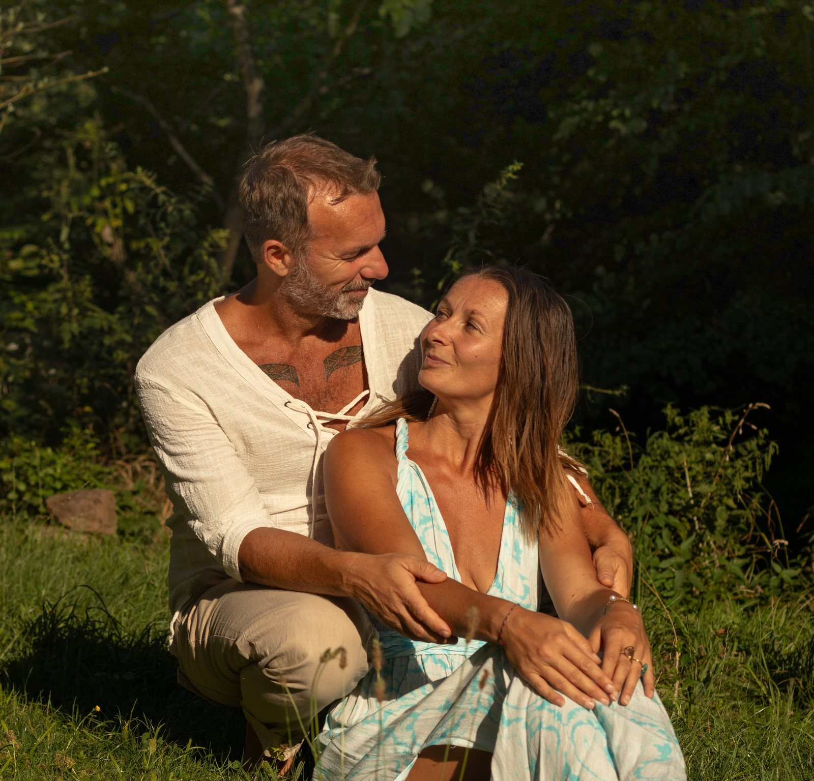

Příběh Oázy a kdo ji tvoří.
Místo, kde může každý na chvíli odložit vše, čím si myslí, že musí být, a jednoduše být tím, kým ve své podstatě je.

Už od dětství v sobě nesla hlubokou touhu tvořit život — a vše v něm — harmonickým, láskyplným a krásným. Zároveň cítila, že život skrývá mnohem víc, než co jí nabízelo tradiční vzdělání a běžný pohled západní společnosti.
Mnoho let cestovala, podnikala a poznávala různé kouty světa. Setkávala se s odlišnými kulturami, filozofiemi, náboženstvími i způsoby vnímání reality. Dobrovolničila, pomáhala a poznávala úplně obyčejný, prostý život v Asii — lidi, kteří neměli nic, a přitom byli tak spokojení, naplnění, radostní a spojení s něčím, co je přesahovalo.
Tyto zkušenosti jí otevřely nejen oči, ale především srdce a vědomí. Postupně v ní dozrávalo poznání, že skutečná změna začíná uvnitř každého z nás. Hluboké životní zkušenosti, které následovaly, v ní pak zcela vyjasnily směr, kterým chce kráčet — přinést druhým do života to, co sama objevila: vědomí, lásku, klid a prostor pro opravdové bytí, svobodu i krásno.
S touto vizí v srdci se zrodila touha vytvořit místo, kde se lidé mohou zastavit, vydechnout, obrátit pozornost do svého nitra, uvolnit staré zátěže a znovu se propojit sami se sebou.
Přesně v tu chvíli vzala do ruky telefon a napsala neznámému pánovi — Lukášovi do Centra péče o duši v Kroměříži — že ráda nabídne své dobrovolnické ruce pro cokoliv užitečného. Pár dní nato se setkali, den před jeho narozeninami. A byla to láska. ❤️
Lukáš navíc nesl velmi podobný záměr. Dokonce zmínil, že pár dní předtím, než mu od Martiny přišla první zpráva, zrovna fantazíroval a kreslil podobu hlavní budovy budoucího centra.
Vše do sebe začalo zapadat jako dílky puzzle a události se skládaly přirozeně a s lehkostí. Tvořili společně nové projekty, uspořádali první retreat na Bali... A během jediného roku — opět přesně na Lukášovy narozeniny — dostali klíče od malé chaloupky a velkého kusu ráje Matky Země.
A tak začala vznikat Oáza ADAMANTHEA. Místo klidu, vědomého setkávání, inspirace a návratu k sobě. Místo, kde může každý na chvíli odložit vše, čím si myslí, že musí být, a jednoduše být tím, kým ve své podstatě je. ❤️
Měli obrovskou podporu shora, vše šlo hladce a oba měli spoustu energie a elánu tvořit. Měsíce jen vyklízeli, odnášeli, pálili a přetvářeli — do Halenkovic jezdili každý den, ráno tam, navečer zase zpátky. Bez tekoucí vody, elektřiny, odpadu. Stačila jedna kadibudka a kamna na dřevo, kde se dalo něco malého ohřát. :)
Z malé chaloupky vyrostla dvoupatrová budova. Martina už s velkým bříškem — a Willym v něm — tvořila Oázu společně s Lukášem. Legendární je i hláška tchána: „Martino, ty v těch gumákách snad pojedeš i do porodnice!" :)
Zjara se na poli po bramborech začala rodit zahrada a postupně se ukazovat vize budoucích energetických míst, portálů... Vždy přišel nápad, kopa energie, začalo se kopnutím do země — a pak se přirozeně ukázalo, co přidat a jak to udělat. Přesně tak, aby to bylo to, co to být má. 🌈
A takhle Oáza roste i nadále. Sám prostor ji vede. Posledními projekty byla balijská boho chatka na Pobyt ve světle a větší přírodní stavba ze slámy a hlíny pro setkávání — Shalla.
Lukášova motivace vždy vedla skrze jeho vlastní nitro — skrze poznávání vlastních emocí, hranic a zkoumání hlubokých nastavení, která si do tohoto života přinesl či přijal, ať už skrze rodovou linii, nebo své předešlé inkarnace. Z malého citlivého chlapce se silně rozvinutou empatií a intuicí se zrodila tvořivá bytost se zájmem o hudbu, malování, poezii, filozofii a psychologii.
Přes svého otce získal první zkušenosti a vjemy práce s energií a touhu poznávat mimosmyslová a parapsychologická mystéria. Ve čtvrtém sedmiletém cyklu se dostal k prvním šamanským technikám a práci s energií a následně do Indie na Oneness University, kde získal vědomí, poznání a prožitky toho, jak lidská bytost funguje ve svých různých podobách. Během několika cest do Indie, absolvování trenérských kurzů i zasvěcení k němu začal promlouvat duch a vést ho o to silněji.
V roce 2010 založil meditační centrum a jeho praxe nabírala na síle. Vedl terapie, meditace a učil druhé, jak se znovu spojit sami se sebou — aby si i oni mohli zlepšit život, vztahy, hojnost a být šťastní. Prošel také intenzivními zkušenostmi skrze šamanské medicíny Jižní Ameriky a Afriky a po hlubokém vnitřním propuštění získal schopnost vidět a vnímat rodové zátěže i minulé životy, nejen u sebe, ale i u druhých. Jedním z jeho darů je aktivace spirituálních portálů, napojení na hvězdné civilizace a systémy a komunikace s krystaly — což se promítlo i do zahrady v Oáze, kterou s Martinou a Willym tvoří.
Setkání s jeho ženou bylo osudové spojení. Zjistili, že roky bydleli pár desítek metrů od sebe, a vůbec o tom nevěděli. Jakmile se poprvé uviděli, všechno do sebe zapadlo, jejich vize se spojily a nastartovali intenzivní tvoření centra v přírodě i svou společnou cestu.
Nyní, v roce 2026, uplynulo deset let od jejich prvního setkání. A Oáza je tu – v celé své kráse, se všemi dary, které společně zhmotnili a vytvořili. Nejen pro sebe, ale především pro všechny, kteří touží po zastavení, inspiraci, poznání a hlubším spojení se sebou samými.
Návštěvníci jsou srdečně vítáni v magické Portálové zahradě i na rozmanitých akcích, které Oáza nabízí. Konají se zde aktivace, meditace, kurzy, kakaové ceremonie, Blue Lotus ceremonie, Sound Healing, retreaty, setkání s mantrami a hudbou, focení aury a čaker a mnoho dalšího.
Díky dlouholetým zkušenostem, osobnímu růstu a citlivému vnímání se postupně rozvinula také schopnost nahlížet pod povrch věcí – rozpoznávat příčiny různých životních nastavení, opakujících se vzorců, rodových zátěží či vnitřních bloků. Z této cesty vznikla široká nabídka individuálních služeb – konzultace, terapie a osobní sezení, aktivace portálů ve vašem domově, harmonizace a očista prostoru a další formy podpory na cestě k větší lehkosti a souladu.
Velká láska k Matce Zemi, jejím posvátným místům a vnímání jejich jedinečných energií dala vzniknout také společným cestám do míst, která se stala jejich druhým domovem. Můžete se s Oázou vydat na cestu na Bali, do Bosenského údolí pyramid nebo se v blízké době připojit i k cestám do Egypta.
Oáza není jen místo. Je to prostor, kde můžete na chvíli zpomalit, nadechnout se a jednoduše být. Více naleznete v nabídce služeb.
Klíčem je, že začali poznávat všechny své části společně — vidět jeden druhého v sobě, propouštět další vrstvy a neustále nacházet sami sebe v touze růst.